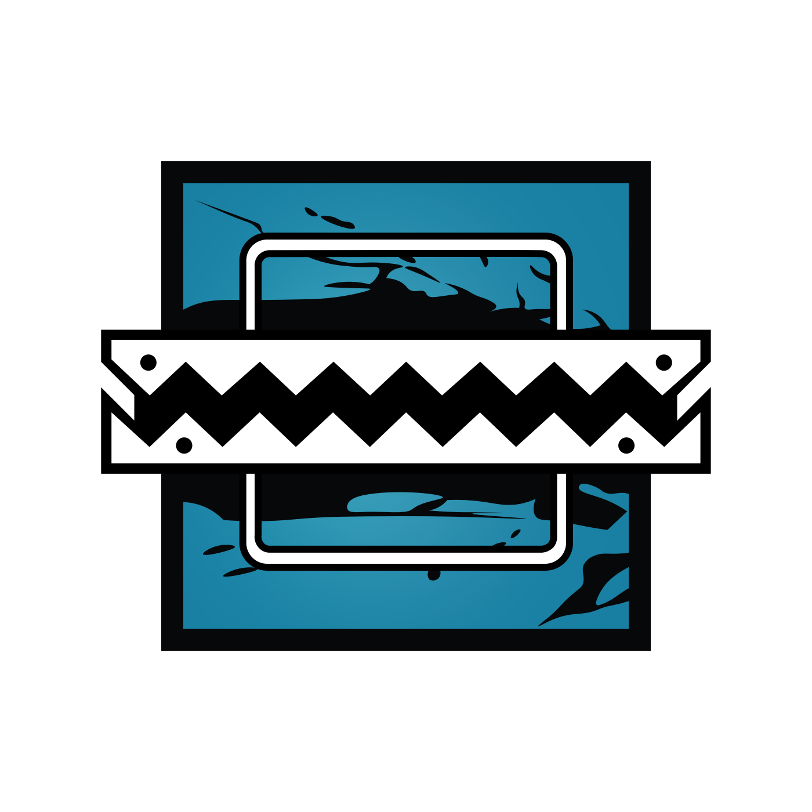
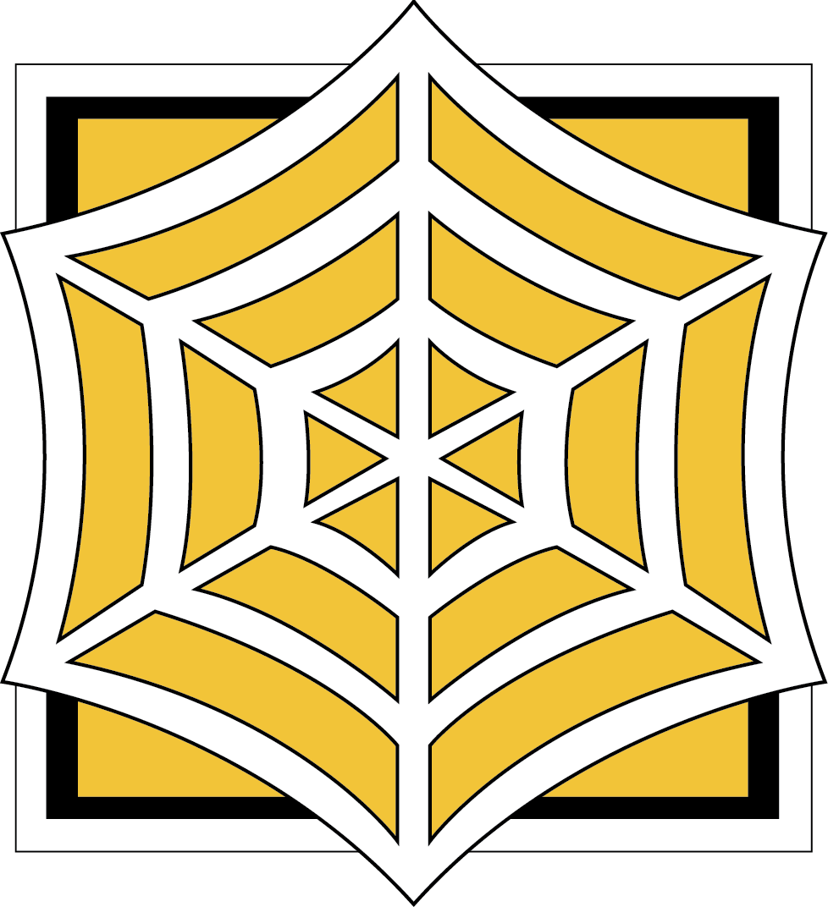

Kafe
3rd Floor / Defence

-
Rook
Ancora - 1 - Abrir Pixel no chao com granada para cobrir a subida da escada nova.
2 - Cobrir descida da Claraboia e Alcapao.
-

Frost
Ancora - 1 - Cobrir as duas janelas do Bomb A, dar CAll para o Jeagger quando spotar Rapel.
2 - Dar Suporte para o Rook nos alcapoes.
-

Jeagger
Defesa Avancada - 1 - Cobrir a Subida da escada trazeira.
2 - Aguardar o Call da Frost para rotacao externa e pegar Rapel.
-

Pulse
Intel - 1 - Scannear as janelas da area de fumantes e o Trem no andar de baixo, dar Inter para rotacao da Valk.
2 - Proteger a area de fumantes. Em caso de plante, descer e scannear o plant para jogar C4. -
Valk
Rotacao - 1 - Proteger a escada vermelha.
2 - Aguardar call do Pulse para rotacao externa e pegar Rapel.
Kafe
Train / Defence
-
Mira
Ancora - 1 - Abrir a parede da escada vermelha com a 12 e instalar as Miras no Bomb dando visao para os dois objetivos.
2 - Cobrir a janela do bomb A, escada vermelha e dar call quando o time adversario pressionar a porta grande do bomb A.
-
Castle
Ancora - 1 - fechar as portas do bomb A com as barricadas a prova de bala.
2 - Cobrir o Bomb B usando o Espelho Negro da Mira, dar o call para os Roamers no terceiro andar quando invadirem o Bomb B.
-
Maestro
Intel / Ancora - 1 - Posicionar o Evil Eye no salao princial e corredor da escada traseira para atrasar o avanco do ataque e obter Intel.
2 - Guardar Pixel de dentro do Trem ajudando a segurar bomb A e B conforme receber call.
-
Jaeger
Rotacao - 1 - Posicionar ADS para proteger os Ancoras e Arame Farpado nas escadas vermelha e traseira.
2 - Reforcar os alcapoes do terceiro andar e cuidar a parte de cima do bomb. Aguardar Call dos Ancoras para descer salao principal ou escada traseira e escada vermelha. -
Lesion
Rotacao - 1 - Posicionar Gu Mine no salao principal, janela do Bomb A e escadas vermelha/traseira.
2 - Reforcar os alcapoes do terceiro andar e cuidar a parte de cima do bomb. Aguardar Call dos Ancoras para descer salao principal ou escada traseira e escada vermelha.
Kafe
Cozinha / Defence
-
Mira
Ancora - 1 - Posicionar as duas Miras para cobertura da Padaria e corredor vermelho.
2 - Dar o call para o Maestro em caso de Adversario na Padaria ou anti-sala padaria.
-
Bandit
Ancora - 1 - reforcar com choque as paredes da Mira e o frigorifico.
2 - Usar a Mira para cobrir corredor vermelho e pos-sala da entrada principal.
-
Maestro
Intel / Ancora - 1 - Posicionar o Evil Eye na porta da Padaria e no corredor vermelho para Intel e atrasar avanco.
2 - Cuidar da porta da cozinha protegendo a retaguarda da Mira e Bandit.
-
Jaeger
Rotacao - 1 - Posicionar ADS para proteger os Ancoras e tambem um ADS proxima a camera do Maestro na porta padaria, instalar Arame Farpado na porta da cozinha pelo corredor vermelho para impedir Rush.
2 - Cuidar a parte de cima do Bomb em caso de Fuze, Sledge ou Buck tentando ataque vertical. -
Lesion
Rotacao - 1 - Posicionar Gu Mine na porta da cozinha pelo corredor vermelho para evitar Rush. Apos inicio da fase de acao colocar Gu Mines no andar superior para intel.
2 - Reforcar o alcapao do frigorifico, colocar Gu Mine no corredor frigorifico, apoiar Jaegger no andar de cima e aguardar call para rotacao.
Kafe
3rd Floor / ATK

-
Thermite
Suporte - 1 Deixar uma Claymore e um Drone na base da escada traseira e Dronar para a subida do Montagne e Nomad
2 - Subir no ar condicionado e abrir a janela para o pixel cobrindo topo da escada e corredor entre Bomb A e area de fumantes. Dar cobertura para a subida da escada e impedir rotacao por essa rota.
-
Capitao
Suporte - 1 - Posicionar uma Claymore na porta que da acesso a varanda impedindo peek pela sala de leitura. Deixar um drone nessa area.
2 - Abrir pixel no rapel pela janela, aguardar call para jogar fumaca e fogo no momento do plant.
-
Gridlock
Suporte / Intel - 1 - Deixar um drone na area de fumantes/bar para conseguir intel. Posicionar Drone no momento do Rush pela escada
2 - Guardar Pixel da ligacao Bar/bomb A, jogar fumaca e Trap no momento do plant. Apos o Plant, deixar drones posicionados para descida pelo alcapao.
-
Nomad
Rush / Plant - 1 - Aguardar Intel do suporte para Rushar escada, posicionar 1 Airjab na metade da escada para impedir rotacao.
2 - Chegar no bomb A com a cobertura do Montagne, plantar o Defuse e posicionar os Airjabs restantes ao redor do Defuse. -
Montagne
Rush / Cover - 1 - Aguardar call do Suporte para subir escada traseira. Antes de subir a escada posicionar um Drone na base dela para intel.
2 - Cobrir a subida da Nomad ate o bomb. Apos o Plant cobrir o defusador com escudo.
Kafe
Sala de Leitura / ATK
-
Thermite
Rush - 1 - Aguardar call da Gridlock para descer Alcapao da escada vermelha e dominar Trem.
2 - Colocar uma Claymore no corredor que liga saguao principal e corredor do Bomb A, apos o plant cuidar as costas da Gridlock no trem.
-
Capitao
Suporte / Plant - 1 - Aguardar o call da Nomad para subir escada traseira junto com Montagne. Deixar Claymore na escada para evitar rotacao por cima.
2 -Usar Smoke e Fogo no corredor da sala de Leitura para chegar no Bomb A e plantar.
-
Gridlock
Suporte / Intel - 1 -Dronar para descida do Blackbeard pelo alcapao e cobrir avanco ate o trem.
2 -Aguardar chegada do Capitao para Plante, jogar Smoke e Trap na porta do Bomb no momento do plant.
-
Nomad
Suporte / Intel - 1 - Dronar para subida do Montagne e Capitao. Colocar Airjab na porta do Respawn para evitar peek no Rapel.
2 -Apos plant abrir pixel na janela e jogar Airjab na porta e na lareira. -
Montagne
Rush / Cover - 1 - Aguardar call do Suporte para subir escada traseira. Antes de subir a escada posicionar um Drone na base dela para intel.
2 - Cobrir a subida do Capitao ate o bomb. Apos o Plant cobrir o defusador com escudo.
Kafe
Cozinha/ ATK
-
Thermite
Suporte / Breacher - 1 -Dronar para entrada da Nomad pela porta da escada traseira. Apos entrada posicionar Claymore na parte do meio da escada traseira cortando a rotacao.
2 - Apos entrada do time no primeiro andar explodir parede frigorifico e parede cozinha no corredor vermelho. Segurar pixel na porta da cozinha pelo corredor vermelho.
-
Capitao
Suporte / Plant - 1 - Dronar a recepcao e padaria para entrada da Gridlock ate a escada vermelha. Apos entrada, instalar Claymore na ligacao padaria/corredor vermelho.
2 -Apos o Thermite abrir a parede, jogar Smoke e fogo nas ligacoes do Frigorifico e Padaria para a cozinha, aguardar Rush do Montagne e plantar o Defuse.
-
Gridlock
Rush/Marcacao - 1 -Aguardar call do Capitao para entrar pela janela lateral da padaria e avancar para escada vermelha.
2 - Colocar Trap no topo da escada vermelha e marcar rotacao. No momento do Rush do Montagne jogar fumaca e Trap na cozinha segurando Pixel pela escada.
-
Nomad
Rush - 1 - Aguardar Call do Thermite para entrar pela escada branca. Apos entrar, posicionar Airjab na escada principal ao lado da Recepcao.
2 -Quando o Thermite abrir frigorifico, avancar e pegar Pixel para dentro da cozinha. Aguardar Rush do Montagne para jogar Airjab na cozinha e guardar Pixel pelo frigorifico. -
Montagne
Rush / Intel - 1 - No inicio do Round utilizar os Drones para dar Call aos companheiros.
2 - Aguardar call do Time para Rushar o Bomb e proteger o Plant.